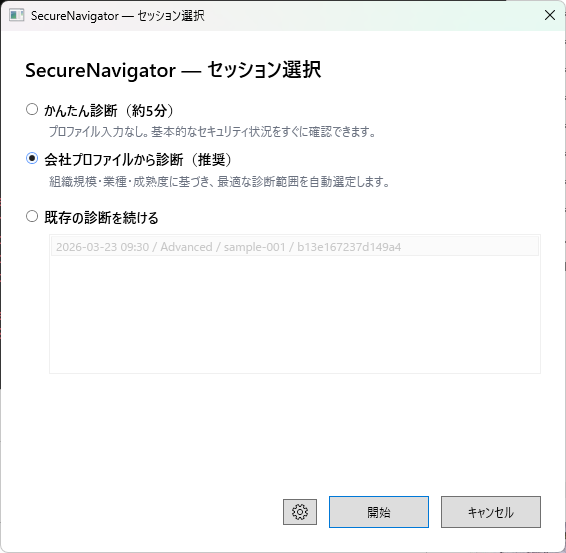
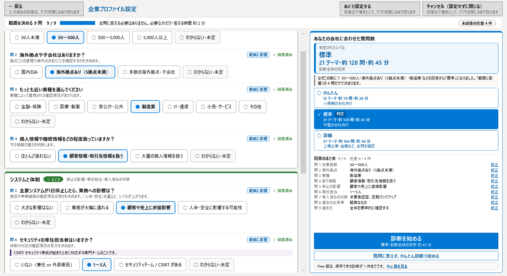
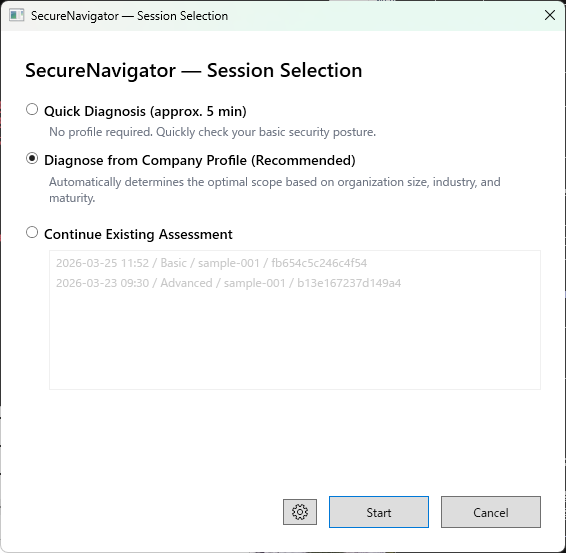
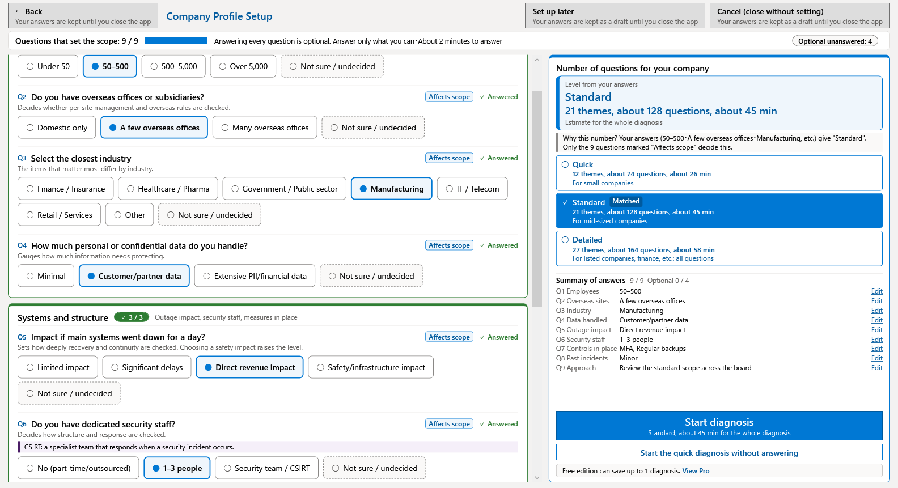

かんたん診断と会社プロファイルからの診断、言語選択、セッション管理
SecureNavigator では、2つの診断モードから選択して新しい診断を開始できます。
プロファイルの入力なしで、基本的なセキュリティ状況をすぐに確認できるモードです。短時間で概要レベルの評価を得たい場合に適しています。
開始時の質問（企業プロファイル）に答えてから診断を開始するモードです。1 画面に「範囲を決める 9 問」（従業員数・海外拠点・業種・扱う情報・停止の影響・専任担当・導入済みの対策・過去の出来事・進め方）が並び、システムの場所や AI の利用などの任意の 4 問は折りたたまれています。回答に合わせて、画面右の「あなたの会社に合わせた質問数」に、判定されたレベルと「N テーマ・約 N 問・約 N 分」の目安が表示されます。レベルは「かんたん」「標準」「詳細」から選べます。「わからない・未定」も選べます。「戻る」「あとで設定する」「キャンセル」を選んでも、回答はアプリを閉じるまで残ります。

診断を作成する際に、質問文と回答選択肢の表示言語を選択できます。現在、日本語と英語に対応しています。診断の途中でも設定画面から言語を変更できます。
SecureNavigator では、診断の進捗をセッションとして保存できます。
| エディション | 保存可能なセッション数 |
|---|---|
| Free | 1 件 |
| Pro | 3 件 |
新しいセッションを作成すると、既存のセッションは保持されたまま、新しい診断が開始されます。保存数の上限に達した場合は、既存のセッションを削除してから新しい診断を作成する必要があります。
セッションはアプリを閉じても保存されます。次回起動時にセッション選択画面から前回の続きを再開できます。

Quick diagnosis vs diagnosis from company profile, language selection, session management
SecureNavigator offers two diagnosis modes to start a new assessment.
Quickly check your basic security posture without entering a profile. This mode is suited for getting a high-level evaluation in a short time.
Answer the initial questions (company profile) before starting. The 9 questions that set the scope (number of employees, overseas sites, industry, information handled, impact of an outage, dedicated security staff, measures in place, past incidents, and how to proceed) are shown on one screen, and 4 optional questions (such as where your systems run and AI use) are collapsed. As you answer, the "Number of questions for your company" panel on the right shows the level from your answers and an estimate of "N themes, about N questions, about N min". Choose from Quick, Standard, or Detailed. "Not sure / undecided" is also available. Your answers are kept until you close the app, even if you select Back, Set up later, or Cancel.

When creating an assessment, you can choose the display language for questions and answer options. Currently, Japanese and English are supported. You can also change the language mid-assessment from the Settings screen.
SecureNavigator saves assessment progress as sessions.
| Edition | Maximum Saved Sessions |
|---|---|
| Free | 1 |
| Pro | 3 |
Creating a new session keeps existing sessions intact and starts a fresh assessment. If you reach the session limit, you must delete an existing session before creating a new one.
Sessions are preserved when you close the application. You can resume your previous assessment from the session selection screen on the next launch.
